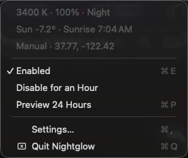
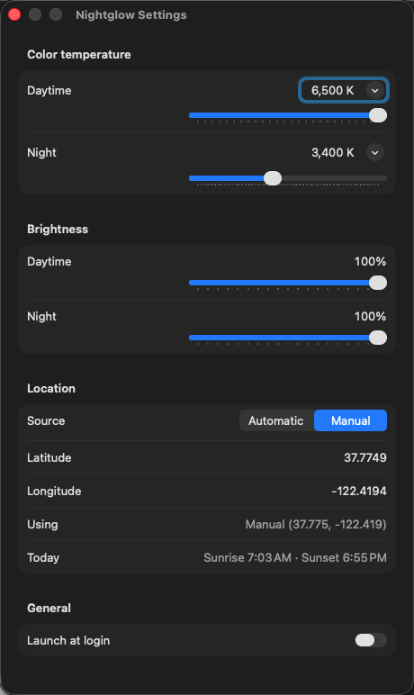

Free & open source · macOS 13+
Nightglow
Your Mac, in step with the sun. Full daylight while it's up; warm, gentle light once it sets, on every display you own.
- Place
- San Francisco
- 37.8° N 122.4° W · default
- Sun
- —
- Sunrise · Sunset
- — · —
- This page
- —
- Local time
- —
I · The day
This page is already running Nightglow.
The colors you're reading come from the sun's position where you are right now, or over San Francisco if you'd rather not share. Drag across the day to see what your screen will do.
II · How it works
Follows the sun, not the clock.
-
01
Twilight, measured
Nightglow computes the sun's elevation for your coordinates with the NOAA solar equations. Daylight holds until the sun is 3° up, then eases to evening warmth by the end of civil twilight, 6° below the horizon. In June and in December, in Oslo and in Quito, it tracks the real sky.
-
02
Every display, calibration intact
It scales each monitor's own ColorSync gamma table rather than replacing it. External screens warm up too, and your calibration survives.
-
03
Works before you say yes
No location permission? Nightglow starts from your time zone's reference city. Allow Location Services and it refines to within a kilometre. Coordinates never leave your Mac.
-
04
Can't leave you orange
macOS drops the tint the moment the app quits or crashes. Pause for an hour from the menu, preview a whole day in twelve seconds, or set day and night temperatures from Candle to Daylight.


III · Install
Two minutes, then forget it.
-
Download
Get Nightglow.zip, unzip it, and move Nightglow.app to Applications.
-
Open it once
Nightglow isn't notarized yet, so macOS asks first. Open it, then choose System Settings → Privacy & Security → Open Anyway. Or run:
xattr -dr com.apple.quarantine /Applications/Nightglow.app -
Or build it yourself
git clone https://github.com/micahstubbs/nightglow cd nightglow && yarn install-appSwift, no Xcode project, 23 tests. Pull requests welcome.